Filtering_analysis
Lauren Blake
June 10, 2016
- The goal of this file is to establish filtering criteria for multispecies RNA-seq data.
- Introduction
- Patterns of log2(CPM)
- Patterns of log2(CPM) for each species
- Filtering 1: log2(CPM) > 1 in at least 4 samples (original filtering scheme)
- Different log2(cpm) thresholds (1 to 48 samples required)
- Filtering 2: Log2(CPM) > a particular threshold adjusted for library size in 4/4 samples, 3/4 samples, and 2/4 samples per tissue-species pair.
- Distribution of NAs/0 counts
- Density plots of gene counts when we require 2/4 samples in each tissue-species pair to have log2(CPM) > -5
- Voom and corfit (filtering but no additional normalization)
- PCA and clustering
- Voom and corfit (filtering and cyclic loess normalization)
- PCA and clustering
- Voom and corfit (filtering and quantile normalization)
- PCA and clustering
- GC content normalization + filtering + TMM + voom + no normalization
The goal of this file is to establish filtering criteria for multispecies RNA-seq data.
Introduction
There are the main considerations for filtering:
What to filter (raw counts or CPM). Our lab frequently uses CPM in human RNA-seq and multi-species RNA-seq data (e.g. Gallego Romero and Pavlovic et al. 2015).
What threshold(s) to filter at e.g. how many samples, tissues, and/or species should have a present value in order to include the gene in the later analysis. For example, Julien had used the cut-off of log2(cpm > 1) in at least 4 of the samples for each gene. This is a potentially lax cutoff and may lead to us having lots of missing data when we perform the differential expression analysis. We have 12 tissue-species pairs. Therefore, we will evaluate the performance of 2/4, 3/4, and 4/4 samples in all 12 tissue-species pairs.
# Load libraries
library("gplots")## Warning: package 'gplots' was built under R version 3.1.3##
## Attaching package: 'gplots'
##
## The following object is masked from 'package:stats':
##
## lowesslibrary("ggplot2")## Warning: package 'ggplot2' was built under R version 3.1.3library("RColorBrewer")
library("scales")
library("edgeR")## Loading required package: limma## Warning: package 'limma' was built under R version 3.1.3library("R.utils")## Warning: package 'R.utils' was built under R version 3.1.3## Loading required package: R.oo## Warning: package 'R.oo' was built under R version 3.1.3## Loading required package: R.methodsS3
## R.methodsS3 v1.7.0 (2015-02-19) successfully loaded. See ?R.methodsS3 for help.
## R.oo v1.19.0 (2015-02-27) successfully loaded. See ?R.oo for help.
##
## Attaching package: 'R.oo'
##
## The following objects are masked from 'package:methods':
##
## getClasses, getMethods
##
## The following objects are masked from 'package:base':
##
## attach, detach, gc, load, save
##
## R.utils v2.0.2 (2015-04-27) successfully loaded. See ?R.utils for help.
##
## Attaching package: 'R.utils'
##
## The following object is masked from 'package:utils':
##
## timestamp
##
## The following objects are masked from 'package:base':
##
## cat, commandArgs, getOption, inherits, isOpen, parse, warningslibrary("plyr")## Warning: package 'plyr' was built under R version 3.1.3library("limma")
library("statmod")## Warning: package 'statmod' was built under R version 3.1.3library("EDASeq")## Loading required package: Biobase
## Loading required package: BiocGenerics
## Loading required package: parallel
##
## Attaching package: 'BiocGenerics'
##
## The following objects are masked from 'package:parallel':
##
## clusterApply, clusterApplyLB, clusterCall, clusterEvalQ,
## clusterExport, clusterMap, parApply, parCapply, parLapply,
## parLapplyLB, parRapply, parSapply, parSapplyLB
##
## The following object is masked from 'package:limma':
##
## plotMA
##
## The following object is masked from 'package:stats':
##
## xtabs
##
## The following objects are masked from 'package:base':
##
## anyDuplicated, append, as.data.frame, as.vector, cbind,
## colnames, do.call, duplicated, eval, evalq, Filter, Find, get,
## intersect, is.unsorted, lapply, Map, mapply, match, mget,
## order, paste, pmax, pmax.int, pmin, pmin.int, Position, rank,
## rbind, Reduce, rep.int, rownames, sapply, setdiff, sort,
## table, tapply, union, unique, unlist, unsplit
##
## Welcome to Bioconductor
##
## Vignettes contain introductory material; view with
## 'browseVignettes()'. To cite Bioconductor, see
## 'citation("Biobase")', and for packages 'citation("pkgname")'.
##
## Loading required package: ShortRead
## Loading required package: BiocParallel
## Loading required package: Biostrings
## Loading required package: S4Vectors
## Loading required package: stats4
##
## Attaching package: 'S4Vectors'
##
## The following object is masked from 'package:plyr':
##
## rename
##
## Loading required package: IRanges
##
## Attaching package: 'IRanges'
##
## The following object is masked from 'package:plyr':
##
## desc
##
## The following object is masked from 'package:R.oo':
##
## trim
##
## The following object is masked from 'package:gplots':
##
## space
##
## Loading required package: XVector
##
## Attaching package: 'XVector'
##
## The following object is masked from 'package:plyr':
##
## compact
##
## Loading required package: Rsamtools
## Loading required package: GenomeInfoDb## Warning: package 'GenomeInfoDb' was built under R version 3.1.3## Loading required package: GenomicRanges
## Loading required package: GenomicAlignments
##
## Attaching package: 'ShortRead'
##
## The following object is masked from 'package:plyr':
##
## id
##
## The following object is masked from 'package:R.utils':
##
## countLinessource("~/Reg_Evo_Primates/ashlar-trial/analysis/functions.R")
# Load colors
colors <- colorRampPalette(c(brewer.pal(9, "Blues")[1],brewer.pal(9, "Blues")[9]))(100)
pal <- c(brewer.pal(9, "Set1"), brewer.pal(8, "Set2"), brewer.pal(12, "Set3"))
#Load the data
#Raw counts
counts_genes <- read.delim("~/Reg_Evo_Primates/ashlar-trial/data/counts_genes.txt")
#Sample information
samples <- read.csv("~/Reg_Evo_Primates/ashlar-trial/data/Sample_info_RNAseq.csv")
labels <- paste(samples$Species, samples$Tissue, sep=" ")
dim(counts_genes)## [1] 30030 48Patterns of log2(CPM)
We are beginning with 30030 genes and 48 samples. Let’s do some preliminary analysis on the log2(CPM) to determine an appropriate cutoff
# log2(CPM)
dge_original <- DGEList(counts=as.matrix(counts_genes), genes=rownames(counts_genes), group = as.character(t(labels)))
dge_original <- calcNormFactors(dge_original)
cpm <- cpm(dge_original, normalized.lib.sizes=FALSE, log=TRUE, prior.count = 0.25)
head(cpm)## C1H C1K C1Li C1Lu C2H
## ENSG00000000003 4.564233 6.789813 7.694441 5.773165 4.4726734
## ENSG00000000005 2.412927 -1.244922 -1.959985 -3.017812 0.4520966
## ENSG00000000419 5.837153 5.523265 5.371259 5.770149 5.4670113
## ENSG00000000457 4.555262 5.520025 5.336291 5.264139 4.6200607
## ENSG00000000460 1.502012 2.174569 1.515462 2.600163 1.4472195
## ENSG00000000938 5.606913 4.124798 4.525030 7.842364 2.3194663
## C2K C2Li C2Lu C3H C3K
## ENSG00000000003 6.4669354 7.304196 4.912173 4.660650 6.8047482
## ENSG00000000005 -0.8965488 -2.731302 -1.691078 -1.564830 0.3681473
## ENSG00000000419 5.4907323 5.088292 5.547574 5.421215 5.5778059
## ENSG00000000457 5.6797526 5.820056 5.333629 4.363949 5.6026369
## ENSG00000000460 2.3578775 1.601344 2.370642 1.326532 1.8589657
## ENSG00000000938 4.5683827 4.663360 8.431227 4.710417 4.6218065
## C3Li C3Lu C4H C4K C4Li C4Lu
## ENSG00000000003 7.030339 6.248752 4.177820 6.829993 7.655935 5.802391
## ENSG00000000005 -4.372920 -3.440579 3.790089 -1.156918 -4.284858 -2.109757
## ENSG00000000419 5.659722 5.969468 5.727458 5.584174 5.083884 5.693946
## ENSG00000000457 5.744087 5.541725 4.587350 5.349447 5.799782 5.635966
## ENSG00000000460 1.591935 2.496838 1.398885 2.152351 1.411153 2.848369
## ENSG00000000938 4.450615 7.533144 3.581034 3.947330 3.782970 8.089986
## H1H H1K H1Li H1Lu H2H H2K
## ENSG00000000003 6.265972 7.273215 6.015802 5.452655 3.659762 7.5802425
## ENSG00000000005 -6.758868 5.321511 -6.758868 -1.815873 -3.935356 0.8394441
## ENSG00000000419 5.639117 5.996667 5.522744 6.164538 5.584985 5.8363059
## ENSG00000000457 4.774197 4.693423 4.393684 4.855725 3.385361 4.5329953
## ENSG00000000460 4.613997 3.174875 4.429190 3.671471 1.870941 2.3524392
## ENSG00000000938 3.947240 4.467732 3.919882 8.231888 5.538700 4.1147845
## H2Li H2Lu H3H H3K H3Li
## ENSG00000000003 6.608150 4.459975 3.5039978 7.4343966 7.237241
## ENSG00000000005 -6.758868 -6.758868 -6.7588684 0.4219297 -6.758868
## ENSG00000000419 5.807652 5.592389 5.7112724 6.1977404 5.718164
## ENSG00000000457 4.420058 4.480725 4.4010065 5.0655337 4.495164
## ENSG00000000460 2.627178 2.831689 -0.1149462 3.3331039 2.739612
## ENSG00000000938 5.959507 7.247870 4.0572218 2.9855411 5.242440
## H3Lu H4H H4K H4Li H4Lu
## ENSG00000000003 5.505916 4.140116 6.68759194 6.352921 4.840593
## ENSG00000000005 -6.758868 -3.029836 -0.04309948 -6.758868 -4.032121
## ENSG00000000419 5.225654 6.100413 5.92387644 5.596977 5.727622
## ENSG00000000457 4.214922 3.168382 4.40317072 4.938968 4.550754
## ENSG00000000460 2.672800 1.486298 2.29833654 2.900790 2.981219
## ENSG00000000938 7.128595 4.774406 4.13651206 6.661918 8.626265
## R1H R1K R1Li R1Lu R2H
## ENSG00000000003 4.0140571 7.214370 7.348500 6.314288 4.323540
## ENSG00000000005 -6.7588684 -6.758868 -4.336084 -2.520248 -3.190336
## ENSG00000000419 5.1216748 5.673236 4.840308 5.285743 4.993661
## ENSG00000000457 3.9429078 5.306239 4.158047 5.236055 4.009887
## ENSG00000000460 0.9433609 1.835933 -1.144673 2.878777 1.115058
## ENSG00000000938 1.4957372 2.845279 2.819237 6.914082 2.025755
## R2K R2Li R2Lu R3H R3K
## ENSG00000000003 7.433444 7.7041221 6.093623 4.139888 7.337622
## ENSG00000000005 -2.052171 -2.1130703 -4.529840 -4.490910 -4.332980
## ENSG00000000419 5.343035 4.7871522 5.320362 5.133729 5.538911
## ENSG00000000457 5.454042 4.5751901 5.704555 3.912325 5.311336
## ENSG00000000460 1.618307 0.5650698 2.833271 1.328409 2.045608
## ENSG00000000938 2.980647 2.7370070 7.022367 2.541959 2.438501
## R3Li R3Lu R4H R4K R4Li
## ENSG00000000003 7.196496 5.890311 4.5640628 7.294732 6.9008780
## ENSG00000000005 -4.008903 -3.404423 -2.7768148 -1.860417 -5.1464301
## ENSG00000000419 4.984542 5.392903 5.0988865 5.415999 4.6598892
## ENSG00000000457 4.353890 5.602235 4.1812679 5.344557 4.5139560
## ENSG00000000460 0.412811 3.013578 0.7612432 1.709171 0.7331316
## ENSG00000000938 2.631430 7.282752 2.1468329 2.510574 3.7052381
## R4Lu
## ENSG00000000003 5.760683
## ENSG00000000005 -6.758868
## ENSG00000000419 5.441185
## ENSG00000000457 5.227764
## ENSG00000000460 3.246643
## ENSG00000000938 7.234341summary(cpm)## C1H C1K C1Li C1Lu
## Min. :-6.7589 Min. :-6.7589 Min. :-6.7589 Min. :-6.75887
## 1st Qu.:-6.7589 1st Qu.:-6.7589 1st Qu.:-6.7589 1st Qu.:-6.75887
## Median :-0.1695 Median : 0.3188 Median :-0.8191 Median : 0.05287
## Mean :-0.4730 Mean :-0.1218 Mean :-0.8821 Mean :-0.28683
## 3rd Qu.: 4.1679 3rd Qu.: 4.5796 3rd Qu.: 3.6213 3rd Qu.: 4.50967
## Max. :14.8786 Max. :13.5394 Max. :16.9448 Max. :14.61862
## C2H C2K C2Li C2Lu
## Min. :-6.7589 Min. :-6.75887 Min. :-6.759 Min. :-6.7589
## 1st Qu.:-6.7589 1st Qu.:-6.75887 1st Qu.:-6.759 1st Qu.:-6.7589
## Median :-0.4957 Median : 0.51662 Median :-1.115 Median : 0.2763
## Mean :-0.6939 Mean :-0.01023 Mean :-1.048 Mean :-0.1516
## 3rd Qu.: 3.9302 3rd Qu.: 4.68856 3rd Qu.: 3.518 3rd Qu.: 4.5795
## Max. :15.0627 Max. :13.42808 Max. :16.765 Max. :14.2569
## C3H C3K C3Li C3Lu
## Min. :-6.7589 Min. :-6.75887 Min. :-6.759 Min. :-6.759
## 1st Qu.:-6.7589 1st Qu.:-6.75887 1st Qu.:-6.759 1st Qu.:-6.759
## Median :-0.6576 Median : 0.48930 Median :-1.324 Median : 0.276
## Mean :-0.7559 Mean :-0.04589 Mean :-1.204 Mean :-0.187
## 3rd Qu.: 3.8588 3rd Qu.: 4.66317 3rd Qu.: 3.383 3rd Qu.: 4.539
## Max. :15.8476 Max. :12.98916 Max. :16.212 Max. :14.368
## C4H C4K C4Li C4Lu
## Min. :-6.7589 Min. :-6.7589 Min. :-6.7589 Min. :-6.75887
## 1st Qu.:-6.7589 1st Qu.:-6.7589 1st Qu.:-6.7589 1st Qu.:-6.75887
## Median :-0.3754 Median : 0.3595 Median :-1.2179 Median : 0.38612
## Mean :-0.5649 Mean :-0.1023 Mean :-0.9978 Mean :-0.09651
## 3rd Qu.: 4.0837 3rd Qu.: 4.5792 3rd Qu.: 3.4301 3rd Qu.: 4.54180
## Max. :14.6987 Max. :13.8061 Max. :16.9800 Max. :12.99041
## H1H H1K H1Li H1Lu
## Min. :-6.7589 Min. :-6.7589 Min. :-6.7589 Min. :-6.7589
## 1st Qu.:-6.7589 1st Qu.:-6.7589 1st Qu.:-6.7589 1st Qu.:-6.7589
## Median :-0.7915 Median : 0.4385 Median :-0.8268 Median : 0.5150
## Mean :-0.8851 Mean :-0.1272 Mean :-0.9555 Mean :-0.1144
## 3rd Qu.: 3.6800 3rd Qu.: 4.6668 3rd Qu.: 3.6529 3rd Qu.: 4.5799
## Max. :16.4518 Max. :13.3164 Max. :16.4704 Max. :13.3574
## H2H H2K H2Li H2Lu
## Min. :-6.7589 Min. :-6.7589 Min. :-6.7589 Min. :-6.7589
## 1st Qu.:-6.7589 1st Qu.:-6.7589 1st Qu.:-6.7589 1st Qu.:-6.7589
## Median :-0.6742 Median : 0.1916 Median :-0.4498 Median : 0.2104
## Mean :-0.7440 Mean :-0.2992 Mean :-0.6602 Mean :-0.2730
## 3rd Qu.: 4.0793 3rd Qu.: 4.6019 3rd Qu.: 4.1216 3rd Qu.: 4.4807
## Max. :14.3413 Max. :14.3815 Max. :15.1256 Max. :12.8652
## H3H H3K H3Li H3Lu
## Min. :-6.7589 Min. :-6.75887 Min. :-6.7589 Min. :-6.7589
## 1st Qu.:-6.7589 1st Qu.:-6.75887 1st Qu.:-6.7589 1st Qu.:-6.7589
## Median :-0.6233 Median : 0.46014 Median :-0.9261 Median : 0.3946
## Mean :-0.9993 Mean :-0.08407 Mean :-0.9843 Mean :-0.1384
## 3rd Qu.: 4.1418 3rd Qu.: 4.65835 3rd Qu.: 3.6874 3rd Qu.: 4.4369
## Max. :15.5013 Max. :14.04569 Max. :16.8480 Max. :13.8120
## H4H H4K H4Li H4Lu
## Min. :-6.7589 Min. :-6.7589 Min. :-6.7589 Min. :-6.75887
## 1st Qu.:-6.7589 1st Qu.:-6.7589 1st Qu.:-6.7589 1st Qu.:-6.75887
## Median :-0.4615 Median : 0.3939 Median :-0.3365 Median : 0.49597
## Mean :-0.6764 Mean :-0.1016 Mean :-0.6177 Mean :-0.04764
## 3rd Qu.: 4.0344 3rd Qu.: 4.6276 3rd Qu.: 3.9904 3rd Qu.: 4.55514
## Max. :15.1925 Max. :14.3613 Max. :15.5473 Max. :13.27849
## R1H R1K R1Li R1Lu
## Min. :-6.759 Min. :-6.75887 Min. :-6.759 Min. :-6.7589
## 1st Qu.:-6.759 1st Qu.:-6.75887 1st Qu.:-6.759 1st Qu.:-6.7589
## Median :-1.036 Median : 0.01536 Median :-1.780 Median : 0.1140
## Mean :-1.006 Mean :-0.33006 Mean :-1.406 Mean :-0.3002
## 3rd Qu.: 3.777 3rd Qu.: 4.54701 3rd Qu.: 3.169 3rd Qu.: 4.6039
## Max. :15.448 Max. :14.15101 Max. :17.411 Max. :14.6977
## R2H R2K R2Li R2Lu
## Min. :-6.7589 Min. :-6.7589 Min. :-6.759 Min. :-6.75887
## 1st Qu.:-6.7589 1st Qu.:-6.7589 1st Qu.:-6.759 1st Qu.:-6.75887
## Median :-0.9691 Median : 0.1664 Median :-1.547 Median : 0.41944
## Mean :-0.9545 Mean :-0.2772 Mean :-1.297 Mean :-0.09506
## 3rd Qu.: 3.7921 3rd Qu.: 4.5786 3rd Qu.: 3.247 3rd Qu.: 4.65400
## Max. :15.4552 Max. :14.0225 Max. :17.374 Max. :13.75005
## R3H R3K R3Li R3Lu
## Min. :-6.7589 Min. :-6.7589 Min. :-6.759 Min. :-6.7589
## 1st Qu.:-6.7589 1st Qu.:-6.7589 1st Qu.:-6.759 1st Qu.:-6.7589
## Median :-0.8032 Median :-0.1557 Median :-1.737 Median : 0.2656
## Mean :-0.8580 Mean :-0.4112 Mean :-1.359 Mean :-0.1675
## 3rd Qu.: 3.8073 3rd Qu.: 4.4095 3rd Qu.: 3.157 3rd Qu.: 4.6359
## Max. :15.4300 Max. :14.9658 Max. :17.612 Max. :14.0165
## R4H R4K R4Li R4Lu
## Min. :-6.7589 Min. :-6.7589 Min. :-6.759 Min. :-6.7589
## 1st Qu.:-6.7589 1st Qu.:-6.7589 1st Qu.:-6.759 1st Qu.:-6.7589
## Median :-0.9703 Median :-0.0379 Median :-1.361 Median : 0.1084
## Mean :-0.9282 Mean :-0.3483 Mean :-1.157 Mean :-0.2538
## 3rd Qu.: 3.7975 3rd Qu.: 4.4682 3rd Qu.: 3.408 3rd Qu.: 4.6003
## Max. :15.3760 Max. :14.5372 Max. :17.148 Max. :14.3620hist(cpm, xlab = "Log2(CPM)", ylim = c(0, 500000))
expr_cutoff <- -5
abline(v = expr_cutoff, col = "red", lwd = 3)
# log2(CPM) adjusted for library sizes
tmm_cpm <- cpm(dge_original, normalized.lib.sizes=TRUE, log=TRUE, prior.count = 0.25)
head(tmm_cpm)## C1H C1K C1Li C1Lu C2H C2K
## ENSG00000000003 4.567373 6.447533 8.256017 5.424906 4.6294354 6.011805
## ENSG00000000005 2.416000 -1.580095 -1.416352 -3.341347 0.6076502 -1.343658
## ENSG00000000419 5.840304 5.181024 5.932747 5.421890 5.6238128 5.035649
## ENSG00000000457 4.558401 5.177784 5.897776 4.915903 4.7768304 5.224658
## ENSG00000000460 1.505008 1.832930 2.075455 2.252356 1.6034149 1.903546
## ENSG00000000938 5.610063 3.782664 5.086430 7.494062 2.4759548 4.113386
## C2Li C2Lu C3H C3K C3Li
## ENSG00000000003 7.997439 4.518180 4.896187 6.34935971 7.711220
## ENSG00000000005 -2.074003 -2.073564 -1.336243 -0.08391333 -3.805819
## ENSG00000000419 5.781412 5.153538 5.656791 5.12246958 6.340540
## ENSG00000000457 6.513238 4.939606 4.599465 5.14729901 6.424910
## ENSG00000000460 2.292856 1.977228 1.561216 1.40473716 2.271103
## ENSG00000000938 5.356426 8.037124 4.945957 4.16655579 5.131295
## C3Lu C4H C4K C4Li C4Lu H1H
## ENSG00000000003 5.825590 4.200148 6.445727 8.368230 5.362211 6.761084
## ENSG00000000005 -3.821423 3.812407 -1.533431 -3.682999 -2.532144 -6.806579
## ENSG00000000419 5.546317 5.749810 5.199950 5.796045 5.253771 6.134200
## ENSG00000000457 5.118596 4.609688 4.965236 6.512006 5.195795 5.269211
## ENSG00000000460 2.074325 1.421009 1.768841 2.121422 2.408692 5.108993
## ENSG00000000938 7.109951 3.603345 3.563260 4.494896 7.649746 4.442136
## H1K H1Li H1Lu H2H H2K H2Li
## ENSG00000000003 6.804563 6.546031 5.007223 3.704707 7.1262303 6.618244
## ENSG00000000005 4.852944 -6.806579 -2.246586 -3.903089 0.3878291 -6.806579
## ENSG00000000419 5.528057 6.052945 5.719069 5.629978 5.3823470 5.817742
## ENSG00000000457 4.224917 4.923772 4.410342 3.430292 4.0791476 4.430133
## ENSG00000000460 2.706694 4.959282 3.226274 1.915724 1.8992527 2.637193
## ENSG00000000938 3.999256 4.449888 7.786373 5.583692 3.6609998 5.969598
## H2Lu H3H H3K H3Li H3Lu
## ENSG00000000003 4.123641 3.4819522 7.018616442 7.646317 5.182205
## ENSG00000000005 -6.806579 -6.8065788 0.009014279 -6.806579 -6.806579
## ENSG00000000419 5.255982 5.6892431 5.781990575 6.127195 4.901956
## ENSG00000000457 4.144389 4.3789705 4.649846700 4.904103 3.891301
## ENSG00000000460 2.495636 -0.1372257 2.917685496 3.148170 2.349467
## ENSG00000000938 6.911422 4.0351829 2.570227284 5.651445 6.804843
## H4H H4K H4Li H4Lu R1H
## ENSG00000000003 4.298917 6.3173589 6.492465 4.430781 4.277450
## ENSG00000000005 -2.885525 -0.4099302 -6.806579 -4.381165 -6.806579
## ENSG00000000419 6.259288 5.5536660 5.736507 5.317749 5.385154
## ENSG00000000457 3.327086 4.0330630 5.078478 4.140972 4.206293
## ENSG00000000460 1.644565 1.9287495 3.040136 2.571756 1.205569
## ENSG00000000938 4.933243 3.7664364 6.801466 8.216330 1.758374
## R1K R1Li R1Lu R2H R2K
## ENSG00000000003 6.865893 8.2379489 5.862719 4.587429 7.080213
## ENSG00000000005 -6.806579 -3.5812300 -2.947388 -2.950144 -2.392446
## ENSG00000000419 5.324798 5.7295743 4.834230 5.257598 4.989863
## ENSG00000000457 4.957819 5.0471784 4.784547 4.273744 5.100864
## ENSG00000000460 1.488300 -0.2693252 2.427739 1.377881 1.266081
## ENSG00000000938 2.497210 3.7078234 6.462495 2.289137 2.627796
## R2Li R2Lu R3H R3K R3Li
## ENSG00000000003 8.590210 5.596179 4.447299 7.118296 8.159964
## ENSG00000000005 -1.254679 -4.918947 -4.250247 -4.518792 -3.157713
## ENSG00000000419 5.673041 4.822969 5.441223 5.319612 5.947843
## ENSG00000000457 5.461042 5.207134 4.219708 5.092042 5.317075
## ENSG00000000460 1.446891 2.336439 1.634827 1.826680 1.371274
## ENSG00000000938 3.622173 6.524890 2.849036 2.219476 3.593860
## R3Lu R4H R4K R4Li R4Lu
## ENSG00000000003 5.443878 4.822954 7.048140 7.679671 5.347353
## ENSG00000000005 -3.806700 -2.535407 -2.099889 -4.589602 -6.806579
## ENSG00000000419 4.946500 5.357811 5.169441 5.438501 5.027872
## ENSG00000000457 5.155818 4.440126 5.098001 5.292544 4.814466
## ENSG00000000460 2.567598 1.018736 1.463169 1.508474 2.833647
## ENSG00000000938 6.836275 2.405256 2.264315 4.483635 6.820965summary(tmm_cpm)## C1H C1K C1Li C1Lu
## Min. :-6.8066 Min. :-6.80658 Min. :-6.8066 Min. :-6.8066
## 1st Qu.:-6.8066 1st Qu.:-6.80658 1st Qu.:-6.8066 1st Qu.:-6.8066
## Median :-0.1668 Median :-0.02105 Median :-0.2657 Median :-0.2925
## Mean :-0.4855 Mean :-0.37961 Mean :-0.5166 Mean :-0.5432
## 3rd Qu.: 4.1710 3rd Qu.: 4.23744 3rd Qu.: 4.1825 3rd Qu.: 4.1615
## Max. :14.8817 Max. :13.19713 Max. :17.5064 Max. :14.2703
## C2H C2K C2Li C2Lu
## Min. :-6.8066 Min. :-6.80658 Min. :-6.8066 Min. :-6.8066
## 1st Qu.:-6.8066 1st Qu.:-6.80658 1st Qu.:-6.8066 1st Qu.:-6.8066
## Median :-0.3413 Median : 0.06448 Median :-0.4337 Median :-0.1148
## Mean :-0.6041 Mean :-0.34989 Mean :-0.6045 Mean :-0.4454
## 3rd Qu.: 4.0869 3rd Qu.: 4.23355 3rd Qu.: 4.2112 3rd Qu.: 4.1856
## Max. :15.2195 Max. :12.97290 Max. :17.4581 Max. :13.8628
## C3H C3K C3Li C3Lu
## Min. :-6.8066 Min. :-6.80658 Min. :-6.8066 Min. :-6.8066
## 1st Qu.:-6.8066 1st Qu.:-6.80658 1st Qu.:-6.8066 1st Qu.:-6.8066
## Median :-0.4257 Median : 0.03697 Median :-0.6560 Median :-0.1439
## Mean :-0.6123 Mean :-0.38408 Mean :-0.7881 Mean :-0.4967
## 3rd Qu.: 4.0943 3rd Qu.: 4.20791 3rd Qu.: 4.0631 3rd Qu.: 4.1164
## Max. :16.0833 Max. :12.53374 Max. :16.8933 Max. :13.9451
## C4H C4K C4Li C4Lu
## Min. :-6.8066 Min. :-6.80658 Min. :-6.8066 Min. :-6.80658
## 1st Qu.:-6.8066 1st Qu.:-6.80658 1st Qu.:-6.8066 1st Qu.:-6.80658
## Median :-0.3538 Median :-0.02203 Median :-0.5183 Median :-0.05095
## Mean :-0.5647 Mean :-0.38909 Mean :-0.5270 Mean :-0.42516
## 3rd Qu.: 4.1061 3rd Qu.: 4.19501 3rd Qu.: 4.1419 3rd Qu.: 4.10172
## Max. :14.7210 Max. :13.42183 Max. :17.6924 Max. :12.55015
## H1H H1K H1Li H1Lu
## Min. :-6.8066 Min. :-6.80658 Min. :-6.8066 Min. :-6.80658
## 1st Qu.:-6.8066 1st Qu.:-6.80658 1st Qu.:-6.8066 1st Qu.:-6.80658
## Median :-0.3036 Median :-0.02683 Median :-0.3044 Median : 0.07246
## Mean :-0.5711 Mean :-0.46538 Mean :-0.6263 Mean :-0.43814
## 3rd Qu.: 4.1748 3rd Qu.: 4.19831 3rd Qu.: 4.1829 3rd Qu.: 4.13460
## Max. :16.9469 Max. :12.84769 Max. :17.0007 Max. :12.91184
## H2H H2K H2Li H2Lu
## Min. :-6.8066 Min. :-6.8066 Min. :-6.8066 Min. :-6.8066
## 1st Qu.:-6.8066 1st Qu.:-6.8066 1st Qu.:-6.8066 1st Qu.:-6.8066
## Median :-0.6305 Median :-0.2586 Median :-0.4404 Median :-0.1235
## Mean :-0.7319 Mean :-0.6168 Mean :-0.6699 Mean :-0.5198
## 3rd Qu.: 4.1243 3rd Qu.: 4.1481 3rd Qu.: 4.1317 3rd Qu.: 4.1444
## Max. :14.3863 Max. :13.9274 Max. :15.1357 Max. :12.5287
## H3H H3K H3Li H3Lu
## Min. :-6.8066 Min. :-6.80658 Min. :-6.8066 Min. :-6.80658
## 1st Qu.:-6.8066 1st Qu.:-6.80658 1st Qu.:-6.8066 1st Qu.:-6.80658
## Median :-0.6457 Median : 0.04715 Median :-0.5239 Median : 0.07294
## Mean :-1.0322 Mean :-0.39018 Mean :-0.7400 Mean :-0.38224
## 3rd Qu.: 4.1198 3rd Qu.: 4.24270 3rd Qu.: 4.0962 3rd Qu.: 4.11322
## Max. :15.4793 Max. :13.62989 Max. :17.2571 Max. :13.48823
## H4H H4K H4Li H4Lu
## Min. :-6.8066 Min. :-6.80658 Min. :-6.8066 Min. :-6.80658
## 1st Qu.:-6.8066 1st Qu.:-6.80658 1st Qu.:-6.8066 1st Qu.:-6.80658
## Median :-0.3051 Median : 0.02613 Median :-0.1989 Median : 0.08872
## Mean :-0.5866 Mean :-0.37704 Mean :-0.5401 Mean :-0.35612
## 3rd Qu.: 4.1932 3rd Qu.: 4.25751 3rd Qu.: 4.1299 3rd Qu.: 4.14536
## Max. :15.3514 Max. :13.99098 Max. :15.6868 Max. :12.86855
## R1H R1K R1Li R1Lu
## Min. :-6.8066 Min. :-6.8066 Min. :-6.8066 Min. :-6.8066
## 1st Qu.:-6.8066 1st Qu.:-6.8066 1st Qu.:-6.8066 1st Qu.:-6.8066
## Median :-0.7778 Median :-0.3301 Median :-0.9126 Median :-0.3336
## Mean :-0.8583 Mean :-0.5809 Mean :-0.8764 Mean :-0.6205
## 3rd Qu.: 4.0400 3rd Qu.: 4.1986 3rd Qu.: 4.0573 3rd Qu.: 4.1525
## Max. :15.7119 Max. :13.8025 Max. :18.3003 Max. :14.2460
## R2H R2K R2Li R2Lu
## Min. :-6.8066 Min. :-6.8066 Min. :-6.8066 Min. :-6.80658
## 1st Qu.:-6.8066 1st Qu.:-6.8066 1st Qu.:-6.8066 1st Qu.:-6.80658
## Median :-0.7102 Median :-0.1840 Median :-0.6800 Median :-0.07444
## Mean :-0.8031 Mean :-0.5329 Mean :-0.7485 Mean :-0.46127
## 3rd Qu.: 4.0559 3rd Qu.: 4.2254 3rd Qu.: 4.1328 3rd Qu.: 4.15668
## Max. :15.7192 Max. :13.6693 Max. :18.2597 Max. :13.25253
## R3H R3K R3Li R3Lu
## Min. :-6.8066 Min. :-6.8066 Min. :-6.8066 Min. :-6.8066
## 1st Qu.:-6.8066 1st Qu.:-6.8066 1st Qu.:-6.8066 1st Qu.:-6.8066
## Median :-0.5007 Median :-0.3732 Median :-0.7956 Median :-0.1774
## Mean :-0.6713 Mean :-0.5759 Mean :-0.7608 Mean :-0.4956
## 3rd Qu.: 4.1147 3rd Qu.: 4.1902 3rd Qu.: 4.1198 3rd Qu.: 4.1895
## Max. :15.7376 Max. :14.7465 Max. :18.5755 Max. :13.5700
## R4H R4K R4Li R4Lu
## Min. :-6.8066 Min. :-6.8066 Min. :-6.8066 Min. :-6.8066
## 1st Qu.:-6.8066 1st Qu.:-6.8066 1st Qu.:-6.8066 1st Qu.:-6.8066
## Median :-0.7163 Median :-0.2825 Median :-0.5974 Median :-0.3014
## Mean :-0.7790 Mean :-0.5327 Mean :-0.6591 Mean :-0.5554
## 3rd Qu.: 4.0563 3rd Qu.: 4.2217 3rd Qu.: 4.1858 3rd Qu.: 4.1870
## Max. :15.6350 Max. :14.2906 Max. :17.9267 Max. :13.9486hist(tmm_cpm, main = "TMM/CPM values (n = 48 samples)")
abline(v = expr_cutoff, col = "red", lwd = 3)
# Median log2(CPM)
cpm_log <- cpm(counts_genes, log = TRUE, prior.count = 0.25)
median_log2_cpm <- apply(cpm_log, 1, median)
hist(median_log2_cpm)
abline(v = expr_cutoff, col = "red", lwd = 3)
# Median log(CPM) adjusted for library sizes
cpm_log <- cpm(counts_genes, normalized.lib.sizes=TRUE, log = TRUE, prior.count = 0.25)
median_log2_cpm <- apply(cpm_log, 1, median)
hist(median_log2_cpm)
abline(v = expr_cutoff, col = "red", lwd = 3)These plots are very similar.
Patterns of log2(CPM) for each species
# Looking at chimpanzees
hist(tmm_cpm[,1], main = "TMM/CPM values for chimpanzee heart sample 1", breaks = 24)
abline(v = expr_cutoff, col = "red", lwd = 3)
hist(tmm_cpm[,1:16], main = "TMM/CPM values for all chimpanzee samples", breaks = 24)
abline(v = expr_cutoff, col = "red", lwd = 3)
# Looking at humans
hist(tmm_cpm[,17], main = "TMM/CPM values for human heart sample 1", breaks = 24)
abline(v = expr_cutoff, col = "red", lwd = 3)
hist(tmm_cpm[,17:32], main = "TMM/CPM values for all human samples", breaks = 24)
abline(v = expr_cutoff, col = "red", lwd = 3)# Rhesus macaques
# Looking at chimpanzees
hist(tmm_cpm[,33], main = "TMM/CPM values for rhesus macaque heart sample 1", breaks = 24)
abline(v = expr_cutoff, col = "red", lwd = 3)
hist(tmm_cpm[,33:48], main = "TMM/CPM values for all rhesus macaque samples", breaks = 24)
abline(v = expr_cutoff, col = "red", lwd = 3)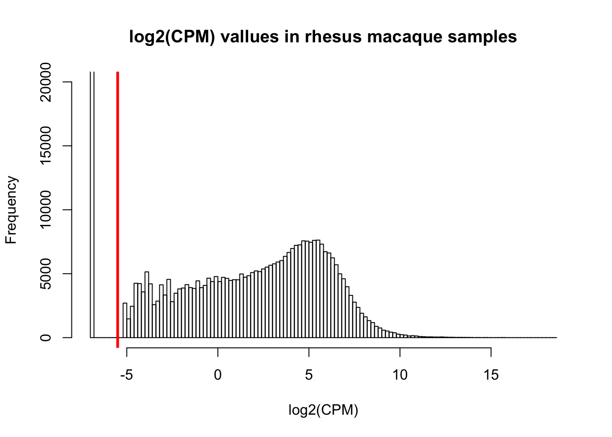
Filtering 1: log2(CPM) > 1 in at least 4 samples (original filtering scheme)
What happens when we require keeping only those that have log2(CPM) > 1 in at least 4 samples? (Julien’s analysis)
cpm_filtered <- cpm[rowSums(cpm > 1) >= 4, ]
dim(cpm_filtered)## [1] 17069 48This leaves us with 16,934 genes.
Different log2(cpm) thresholds (1 to 48 samples required)
#Find number of genes for each sample threshold
filtered_genes <- array(1:48, dim = (c(48,1)))
for (i in 1:48){
cpm_filtered <- cpm[rowSums(cpm > 1) >= i, ]
filter_genes <- as.data.frame(dim(cpm_filtered))
filtered_genes[i, 1] <- filter_genes[1,]
}
# Plot the results
plot(filtered_genes, pch = 16, xlab = "Number of samples required to have log2(cpm) > 1", ylab = "Number of genes", main = "Genes for each sample threshold")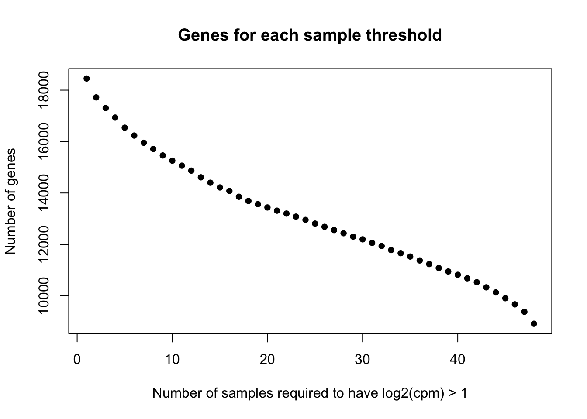
There are 8492 genes when we require log2(cpm) > 1 in all 48 samples.
Filtering 2: Log2(CPM) > a particular threshold adjusted for library size in 4/4 samples, 3/4 samples, and 2/4 samples per tissue-species pair.
# Assign all 12 tissue-species pairs
chimp_hearts <- c(1, 5, 9, 13)
chimp_kidneys <- c(2,6,10,14)
chimp_livers <- c(3,7,11,15)
chimp_lungs <- c(4,8,12,16)
human_hearts <- c(17,21,25,29)
human_kidneys <- c(18,22,26,30)
human_livers <- c(19,23,27,31)
human_lungs <- c(20,24,28,32)
rhesus_hearts <- c(33,37,41,45)
rhesus_kidneys <- c(34,38,42,46)
rhesus_livers <- c(35,39,43,47)
rhesus_lungs <- c(36,40,44,48)
# Save the counts
# Raw counts = log2(counts_genes)
# CPM = tmm_cpm
counts_genes_filtered_3 <- tmm_cpm
# Put the number of samples that you want to have for every tissue-species pair (count/4 samples)
count = 2
threshold = -5
counts_genes_filtered_3A <- counts_genes_filtered_3[rowSums(counts_genes_filtered_3[, chimp_hearts] >= threshold) >= count, ]
dim(counts_genes_filtered_3A)## [1] 21493 48counts_genes_filtered_3B <- counts_genes_filtered_3A[rowSums(counts_genes_filtered_3A[, chimp_kidneys] >= threshold) >= count, ]
dim(counts_genes_filtered_3B)## [1] 20720 48counts_genes_filtered_3C <- counts_genes_filtered_3B[rowSums(counts_genes_filtered_3B[, chimp_livers] >= threshold) >= count, ]
dim(counts_genes_filtered_3C)## [1] 19678 48counts_genes_filtered_3D <- counts_genes_filtered_3C[rowSums(counts_genes_filtered_3C[, chimp_lungs] >= threshold) >= count, ]
dim(counts_genes_filtered_3D)## [1] 19457 48counts_genes_filtered_3E <- counts_genes_filtered_3D[rowSums(counts_genes_filtered_3D[, human_hearts] >= threshold) >= count, ]
dim(counts_genes_filtered_3E)## [1] 18553 48counts_genes_filtered_3F <- counts_genes_filtered_3E[rowSums(counts_genes_filtered_3E[, human_kidneys] >= threshold) >= count, ]
dim(counts_genes_filtered_3F)## [1] 18408 48counts_genes_filtered_3G <- counts_genes_filtered_3F[rowSums(counts_genes_filtered_3F[, human_livers] >= threshold) >= count, ]
dim(counts_genes_filtered_3G)## [1] 18163 48counts_genes_filtered_3H <- counts_genes_filtered_3G[rowSums(counts_genes_filtered_3G[, human_lungs] >= threshold) >= count, ]
dim(counts_genes_filtered_3H)## [1] 18107 48counts_genes_filtered_3I <- counts_genes_filtered_3H[rowSums(counts_genes_filtered_3H[, rhesus_hearts] >= threshold) >= count, ]
dim(counts_genes_filtered_3I)## [1] 17477 48counts_genes_filtered_3J <- counts_genes_filtered_3I[rowSums(counts_genes_filtered_3I[, rhesus_kidneys] >= threshold) >= count, ]
dim(counts_genes_filtered_3J)## [1] 17360 48counts_genes_filtered_3K <- counts_genes_filtered_3J[rowSums(counts_genes_filtered_3J[, rhesus_livers] >= threshold) >= count, ]
dim(counts_genes_filtered_3K)## [1] 17114 48counts_genes_filtered_3L <- counts_genes_filtered_3K[rowSums(counts_genes_filtered_3K[, rhesus_lungs] >= threshold) >= count, ]
dim(counts_genes_filtered_3L)## [1] 17073 48#counts_genes_filtered_3L_sums <- rowSums(counts_genes_filtered_3L)
#hist(counts_genes_filtered_3L_sums, main = "Number of genes remaining (2/4 species-tissue criteria)", xlab = "Number of genes")When we require each sample in each tissue-species pair to have log2(raw counts) >= 0 in each gene, we have 8,916 genes remaining.
When we require 3/4 samples in each tissue-species pair to have log2(raw counts) >= 0 in each gene, we have 15,801 genes remaining.
When we require 2/4 samples in each tissue-species pair to have log2(raw counts) >= 0 in each gene, we have 14,090 genes remaining.
When we require each sample in each tissue-species pair to have log2(CPM) > 1 in each gene, we have 8,916 genes remaining.
When we require 3/4 samples in each tissue-species pair to have log2(CPM) > 1 in each gene, we have 9,652 genes remaining.
When we require 2/4 samples in each tissue-species pair to have log2(CPM) > 1 in each gene, we have 10,157 genes remaining.
When we require each sample in each tissue-species pair to have log2(CPM) > -5 in each gene, we have 14,077 genes remaining.
When we require 3/4 samples in each tissue-species pair to have log2(CPM) > -5 in each gene, we have 15,776 genes remaining.
When we require 2/4 samples in each tissue-species pair to have log2(CPM) > -5 in each gene, we have 17,073 genes remaining.
Distribution of NAs/0 counts
We can get an idea about the distribution of the missing data (where log2(CPM) > -5) e.g. if one species or tissue-species pair is over-represented in the missing genes
# Copy the raw counts table
counts_genes_filtered <- tmm_cpm
# If the raw count in a cell is > threshold, replace the counts with a 1
counts_genes_filtered[counts_genes_filtered > threshold ] <- 1
# If the raw count in a cell is =< threshold, replace the counts with a 0
counts_genes_filtered[counts_genes_filtered <= threshold ] <- 0
head(counts_genes_filtered)## C1H C1K C1Li C1Lu C2H C2K C2Li C2Lu C3H C3K C3Li C3Lu C4H
## ENSG00000000003 1 1 1 1 1 1 1 1 1 1 1 1 1
## ENSG00000000005 1 1 1 1 1 1 1 1 1 1 1 1 1
## ENSG00000000419 1 1 1 1 1 1 1 1 1 1 1 1 1
## ENSG00000000457 1 1 1 1 1 1 1 1 1 1 1 1 1
## ENSG00000000460 1 1 1 1 1 1 1 1 1 1 1 1 1
## ENSG00000000938 1 1 1 1 1 1 1 1 1 1 1 1 1
## C4K C4Li C4Lu H1H H1K H1Li H1Lu H2H H2K H2Li H2Lu H3H H3K
## ENSG00000000003 1 1 1 1 1 1 1 1 1 1 1 1 1
## ENSG00000000005 1 1 1 0 1 0 1 1 1 0 0 0 1
## ENSG00000000419 1 1 1 1 1 1 1 1 1 1 1 1 1
## ENSG00000000457 1 1 1 1 1 1 1 1 1 1 1 1 1
## ENSG00000000460 1 1 1 1 1 1 1 1 1 1 1 1 1
## ENSG00000000938 1 1 1 1 1 1 1 1 1 1 1 1 1
## H3Li H3Lu H4H H4K H4Li H4Lu R1H R1K R1Li R1Lu R2H R2K R2Li
## ENSG00000000003 1 1 1 1 1 1 1 1 1 1 1 1 1
## ENSG00000000005 0 0 1 1 0 1 0 0 1 1 1 1 1
## ENSG00000000419 1 1 1 1 1 1 1 1 1 1 1 1 1
## ENSG00000000457 1 1 1 1 1 1 1 1 1 1 1 1 1
## ENSG00000000460 1 1 1 1 1 1 1 1 1 1 1 1 1
## ENSG00000000938 1 1 1 1 1 1 1 1 1 1 1 1 1
## R2Lu R3H R3K R3Li R3Lu R4H R4K R4Li R4Lu
## ENSG00000000003 1 1 1 1 1 1 1 1 1
## ENSG00000000005 1 1 1 1 1 1 1 1 0
## ENSG00000000419 1 1 1 1 1 1 1 1 1
## ENSG00000000457 1 1 1 1 1 1 1 1 1
## ENSG00000000460 1 1 1 1 1 1 1 1 1
## ENSG00000000938 1 1 1 1 1 1 1 1 1# Count the number of genes that have a raw count < 1
x <- 30030 - colSums(counts_genes_filtered)
par(las=1)
plot(x, pch = 16, ylab = "Number of Genes with log2(CPM) < -5", xlab = "Sample name", xaxt = 'n', col = as.factor(samples$Tissue), main = "Number of genes with 0 raw counts/sample")
axis(side = 1, at = 1:48,labels = samples$Species)
legend("topright", c("Heart", "Kidney", "Liver", "Lung"), lwd = c(2,2,2,2), col = c("black", "red", "green", "blue"))
Density plots of gene counts when we require 2/4 samples in each tissue-species pair to have log2(CPM) > -5
# Find the original counts of all of the genes that fit the 2/4 criteria and then re-do TMM
inshared_lists = row.names(counts_genes) %in% rownames(counts_genes_filtered_3L)
inshared_lists_data <- as.data.frame(inshared_lists)
counts_genes_in <- cbind(counts_genes, inshared_lists_data)
counts_genes_in_2_of_4 <- subset(counts_genes_in, inshared_lists_data == "TRUE")
counts_genes_in_2_of_4 <- counts_genes_in_2_of_4[,1:48]
# Take the TMM of the genes that meet the criteria of 2/4 in 12 tissue-species pairs
dge_2_in_4 <- DGEList(counts=as.matrix(counts_genes_in_2_of_4), genes=rownames(counts_genes_in_2_of_4), group = as.character(t(labels)))
dge_2_in_4 <- calcNormFactors(dge_2_in_4)
cpm <- cpm(dge_2_in_4, normalized.lib.sizes=TRUE, log=TRUE, prior.count = 0.25)
head(cpm)## C1H C1K C1Li C1Lu C2H C2K
## ENSG00000000003 4.563785 6.439524 8.212660 5.486490 4.666078 6.008684
## ENSG00000000419 5.836715 5.173016 5.889395 5.483473 5.660462 5.032529
## ENSG00000000457 4.554813 5.169776 5.854424 4.977482 4.813474 5.221537
## ENSG00000000460 1.501426 1.824937 2.032187 2.313837 1.639961 1.900429
## ENSG00000000938 5.606475 3.774659 5.043083 7.555655 2.512550 4.110266
## ENSG00000000971 6.871795 4.406868 11.320011 6.105112 6.115177 4.819509
## C2Li C2Lu C3H C3K C3Li C3Lu
## ENSG00000000003 7.984095 4.515844 4.917136 6.330657 7.765757 5.832555
## ENSG00000000419 5.768068 5.151202 5.677743 5.103769 6.395072 5.553281
## ENSG00000000457 6.499894 4.937270 4.620412 5.128599 6.479443 5.125560
## ENSG00000000460 2.279533 1.974894 1.582104 1.386091 2.325541 2.081273
## ENSG00000000938 5.343083 8.034788 4.966906 4.147860 5.185820 7.116916
## ENSG00000000971 11.341714 6.197858 5.608583 4.865414 11.401558 5.947349
## C4H C4K C4Li C4Lu H1H H1K
## ENSG00000000003 4.205242 6.441559 8.394173 5.367828 6.739120 6.812406
## ENSG00000000419 5.754906 5.195783 5.821984 5.259388 6.112237 5.535899
## ENSG00000000457 4.614782 4.961069 6.537946 5.201412 5.247250 4.232757
## ENSG00000000460 1.426085 1.764681 2.147310 2.414299 5.087033 2.714525
## ENSG00000000938 3.608437 3.559095 4.520828 7.655365 4.420179 4.007094
## ENSG00000000971 6.814712 5.895681 11.271356 6.359020 11.162249 6.533292
## H1Li H1Lu H2H H2K H2Li H2Lu
## ENSG00000000003 6.536713 5.047269 3.695696 7.169172 6.628072 4.127242
## ENSG00000000419 6.043628 5.759119 5.620963 5.425282 5.827569 5.259585
## ENSG00000000457 4.914456 4.450383 3.421282 4.122069 4.439957 4.147990
## ENSG00000000460 4.949966 3.266293 1.906727 1.942093 2.647005 2.499232
## ENSG00000000938 4.440573 7.826429 5.574678 3.703914 5.979426 6.915025
## ENSG00000000971 11.177273 7.509671 6.377930 4.700046 9.398602 7.256947
## H3H H3K H3Li H3Lu H4H H4K
## ENSG00000000003 3.4759740 7.006642 7.681177 5.177797 4.304746 6.320720
## ENSG00000000419 5.6832619 5.770017 6.162052 4.897549 6.265120 5.557027
## ENSG00000000457 4.3729906 4.637875 4.938954 3.886894 3.332912 4.036422
## ENSG00000000460 -0.1431621 2.905723 3.182996 2.345064 1.650377 1.932100
## ENSG00000000938 4.0292035 2.558268 5.686300 6.800435 4.939073 3.769795
## ENSG00000000971 6.1574250 5.228335 10.291732 7.011938 6.947684 5.981551
## H4Li H4Lu R1H R1K R1Li R1Lu
## ENSG00000000003 6.531062 4.362776 4.308486 6.860558 8.280774 5.886114
## ENSG00000000419 5.775102 5.249731 5.416198 5.319464 5.772394 4.857622
## ENSG00000000457 5.117069 4.072973 4.237328 4.952485 5.089993 4.807938
## ENSG00000000460 3.078695 2.503825 1.236496 1.482977 -0.226967 2.451097
## ENSG00000000938 6.840064 8.148299 1.789339 2.491881 3.750620 6.485891
## ENSG00000000971 10.138544 8.176533 3.980030 6.503645 12.078713 7.416544
## R2H R2K R2Li R2Lu R3H R3K
## ENSG00000000003 4.630263 7.066232 8.595794 5.568472 4.472434 7.099464
## ENSG00000000419 5.300437 4.975885 5.678623 4.795265 5.466363 5.300782
## ENSG00000000457 4.316574 5.086886 5.466625 5.179428 4.244841 5.073213
## ENSG00000000460 1.420581 1.252147 1.452452 2.308775 1.659897 1.807891
## ENSG00000000938 2.331908 2.613833 3.627752 6.497180 2.874149 2.200676
## ENSG00000000971 5.576608 6.710750 11.733756 7.145800 5.153890 5.987633
## R3Li R3Lu R4H R4K R4Li R4Lu
## ENSG00000000003 8.167616 5.397383 4.895839 7.030819 7.658015 5.305429
## ENSG00000000419 5.955495 4.900009 5.430703 5.152123 5.416848 4.985950
## ENSG00000000457 5.324725 5.109325 4.513004 5.080683 5.270891 4.772545
## ENSG00000000460 1.378895 2.521163 1.091325 1.445899 1.486881 2.791765
## ENSG00000000938 3.601505 6.789774 2.478042 2.247023 4.461985 6.779035
## ENSG00000000971 12.052433 7.202149 6.412214 6.405451 11.648158 7.242391summary(cpm)## C1H C1K C1Li C1Lu
## Min. :-6.808 Min. :-6.808 Min. :-6.808 Min. :-6.808
## 1st Qu.: 1.094 1st Qu.: 1.203 1st Qu.: 1.004 1st Qu.: 1.113
## Median : 3.691 Median : 3.757 Median : 3.625 Median : 3.727
## Mean : 3.239 Mean : 3.282 Mean : 3.196 Mean : 3.210
## 3rd Qu.: 5.512 3rd Qu.: 5.530 3rd Qu.: 5.545 3rd Qu.: 5.538
## Max. :14.878 Max. :13.189 Max. :17.463 Max. :14.332
## C2H C2K C2Li C2Lu
## Min. :-6.8079 Min. :-6.808 Min. :-6.8079 Min. :-6.808
## 1st Qu.: 0.9556 1st Qu.: 1.283 1st Qu.: 0.8281 1st Qu.: 1.183
## Median : 3.6369 Median : 3.785 Median : 3.6657 Median : 3.700
## Mean : 3.1547 Mean : 3.300 Mean : 3.1578 Mean : 3.233
## 3rd Qu.: 5.5313 3rd Qu.: 5.467 3rd Qu.: 5.6058 3rd Qu.: 5.482
## Max. :15.2562 Max. :12.970 Max. :17.4447 Max. :13.860
## C3H C3K C3Li C3Lu
## Min. :-6.8079 Min. :-6.808 Min. :-6.8079 Min. :-6.808
## 1st Qu.: 0.8605 1st Qu.: 1.261 1st Qu.: 0.6494 1st Qu.: 1.105
## Median : 3.5930 Median : 3.743 Median : 3.5491 Median : 3.628
## Mean : 3.1242 Mean : 3.263 Mean : 3.0239 Mean : 3.169
## 3rd Qu.: 5.5323 3rd Qu.: 5.456 3rd Qu.: 5.6110 3rd Qu.: 5.468
## Max. :16.1042 Max. :12.515 Max. :16.9478 Max. :13.952
## C4H C4K C4Li C4Lu
## Min. :-6.8079 Min. :-6.808 Min. :-6.8079 Min. :-6.808
## 1st Qu.: 0.9632 1st Qu.: 1.217 1st Qu.: 0.8746 1st Qu.: 1.158
## Median : 3.6221 Median : 3.733 Median : 3.6111 Median : 3.655
## Mean : 3.1480 Mean : 3.256 Mean : 3.1089 Mean : 3.208
## 3rd Qu.: 5.5041 3rd Qu.: 5.489 3rd Qu.: 5.5852 3rd Qu.: 5.415
## Max. :14.7261 Max. :13.418 Max. :17.7183 Max. :12.556
## H1H H1K H1Li H1Lu
## Min. :-6.8079 Min. :-6.808 Min. :-6.8079 Min. :-6.808
## 1st Qu.: 0.9353 1st Qu.: 1.318 1st Qu.: 0.9664 1st Qu.: 1.399
## Median : 3.6109 Median : 3.754 Median : 3.6307 Median : 3.739
## Mean : 3.1826 Mean : 3.262 Mean : 3.1766 Mean : 3.285
## 3rd Qu.: 5.5471 3rd Qu.: 5.467 3rd Qu.: 5.5681 3rd Qu.: 5.411
## Max. :16.9250 Max. :12.856 Max. :16.9914 Max. :12.952
## H2H H2K H2Li H2Lu
## Min. :-6.8079 Min. :-6.808 Min. :-6.8079 Min. :-6.808
## 1st Qu.: 0.8423 1st Qu.: 1.137 1st Qu.: 0.9734 1st Qu.: 1.225
## Median : 3.5824 Median : 3.697 Median : 3.6233 Median : 3.674
## Mean : 3.0710 Mean : 3.137 Mean : 3.1339 Mean : 3.211
## 3rd Qu.: 5.5799 3rd Qu.: 5.497 3rd Qu.: 5.5700 3rd Qu.: 5.432
## Max. :14.3773 Max. :13.970 Max. :15.1455 Max. :12.532
## H3H H3K H3Li H3Lu
## Min. :-6.8079 Min. :-6.808 Min. :-6.8079 Min. :-6.808
## 1st Qu.: 0.9198 1st Qu.: 1.288 1st Qu.: 0.8215 1st Qu.: 1.333
## Median : 3.6197 Median : 3.776 Median : 3.5977 Median : 3.668
## Mean : 2.7729 Mean : 3.273 Mean : 3.0769 Mean : 3.262
## 3rd Qu.: 5.4722 3rd Qu.: 5.460 3rd Qu.: 5.5990 3rd Qu.: 5.382
## Max. :15.4733 Max. :13.618 Max. :17.2920 Max. :13.484
## H4H H4K H4Li H4Lu
## Min. :-6.808 Min. :-6.808 Min. :-6.808 Min. :-6.808
## 1st Qu.: 1.058 1st Qu.: 1.344 1st Qu.: 1.169 1st Qu.: 1.325
## Median : 3.705 Median : 3.806 Median : 3.663 Median : 3.632
## Mean : 3.217 Mean : 3.327 Mean : 3.238 Mean : 3.260
## 3rd Qu.: 5.551 3rd Qu.: 5.498 3rd Qu.: 5.550 3rd Qu.: 5.353
## Max. :15.357 Max. :13.994 Max. :15.725 Max. :12.801
## R1H R1K R1Li R1Lu
## Min. :-6.8079 Min. :-6.808 Min. :-6.8079 Min. :-6.808
## 1st Qu.: 0.6317 1st Qu.: 1.069 1st Qu.: 0.6287 1st Qu.: 1.149
## Median : 3.4989 Median : 3.694 Median : 3.5187 Median : 3.726
## Mean : 2.9586 Mean : 3.153 Mean : 2.9930 Mean : 3.172
## 3rd Qu.: 5.5442 3rd Qu.: 5.501 3rd Qu.: 5.6452 3rd Qu.: 5.459
## Max. :15.7430 Max. :13.797 Max. :18.3432 Max. :14.269
## R2H R2K R2Li R2Lu
## Min. :-6.8079 Min. :-6.808 Min. :-6.8079 Min. :-6.808
## 1st Qu.: 0.7521 1st Qu.: 1.162 1st Qu.: 0.7718 1st Qu.: 1.234
## Median : 3.5452 Median : 3.742 Median : 3.5475 Median : 3.674
## Mean : 3.0432 Mean : 3.222 Mean : 3.0845 Mean : 3.220
## 3rd Qu.: 5.5539 3rd Qu.: 5.512 3rd Qu.: 5.6360 3rd Qu.: 5.414
## Max. :15.7620 Max. :13.655 Max. :18.2653 Max. :13.225
## R3H R3K R3Li R3Lu
## Min. :-6.8079 Min. :-6.8079 Min. :-6.8079 Min. :-6.808
## 1st Qu.: 0.8707 1st Qu.: 0.9458 1st Qu.: 0.6452 1st Qu.: 1.143
## Median : 3.5893 Median : 3.6797 Median : 3.5321 Median : 3.694
## Mean : 3.1566 Mean : 3.1322 Mean : 3.0591 Mean : 3.205
## 3rd Qu.: 5.5711 3rd Qu.: 5.5393 3rd Qu.: 5.6462 3rd Qu.: 5.434
## Max. :15.7627 Max. :14.7276 Max. :18.5831 Max. :13.523
## R4H R4K R4Li R4Lu
## Min. :-6.8079 Min. :-6.808 Min. :-6.8079 Min. :-6.808
## 1st Qu.: 0.8828 1st Qu.: 1.061 1st Qu.: 0.7748 1st Qu.: 1.062
## Median : 3.5980 Median : 3.710 Median : 3.6026 Median : 3.685
## Mean : 3.0947 Mean : 3.196 Mean : 3.1445 Mean : 3.164
## 3rd Qu.: 5.5696 3rd Qu.: 5.529 3rd Qu.: 5.6358 3rd Qu.: 5.445
## Max. :15.7079 Max. :14.273 Max. :17.9050 Max. :13.907hist(cpm, xlab = "Log2(CPM)", main = "Log2(CPM) values for genes meeting the filtering criteria" )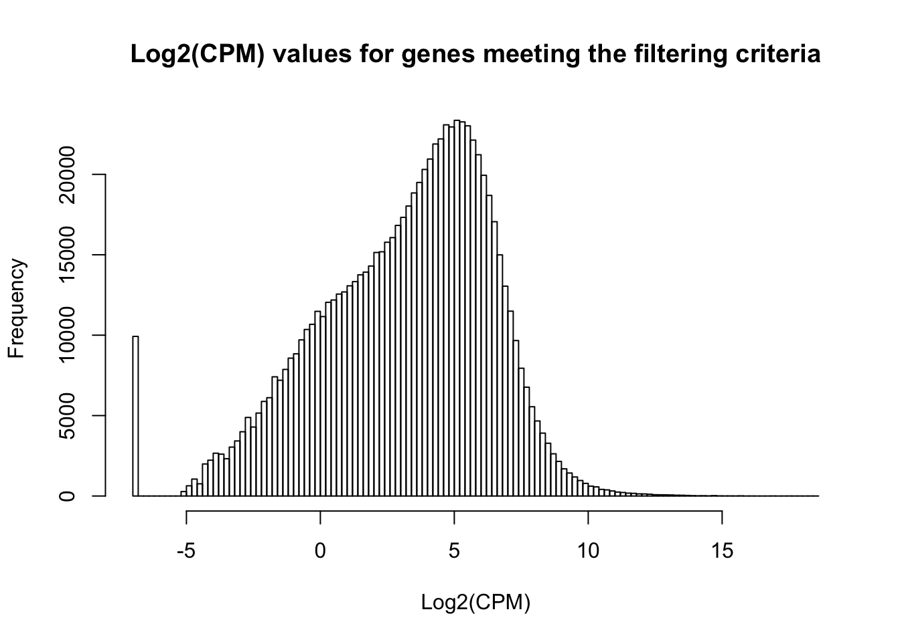
all_hearts <- c(1,5,9,13,17, 21,25,29,33,37,41,45)
all_kidneys <- c(2,6,10,14,18, 22,26,30,34,38,42,46)
all_livers <- c(3,7,11,15,19, 23,27,31,35,39,43,47)
all_lungs <- c(4,8,12,16,20, 24,28,31,36,40,44,48)
col = as.data.frame(pal[as.numeric(samples$Species)])
plotDensities(cpm[,all_hearts], col=col[all_hearts, ], legend="topright")
plotDensities(cpm[,all_kidneys], col=col[all_kidneys, ], legend="topright")
plotDensities(cpm[,all_livers], col=col[all_livers, ], legend="topright")plotDensities(cpm[,all_lungs], col=col[all_lungs, ], legend="topright")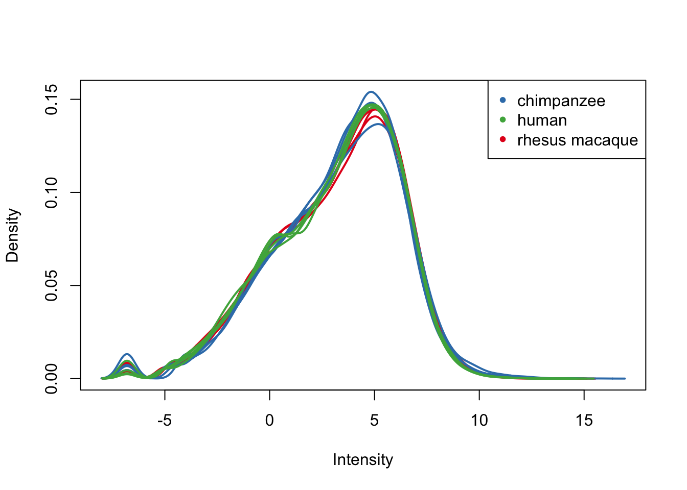
# Look at all tissues in each species
col = as.data.frame(pal[as.numeric(samples$Tissue)])
plotDensities(cpm[,1:16],col=col[1:16, ], legend="topright")
plotDensities(cpm[,17:32], col=col[17:32, ], legend="topright")
plotDensities(cpm[,33:48], col=col[33:48, ], legend="topright")
Voom and corfit (filtering but no additional normalization)
We will use voom in order to decouple the dependency between mean and variance. We will use corfit to model a within-individual term.
## Voom requires a design matrix as input
## To make contrasts easier to formulate, we rename factors species and tissue in a single factor
condition <- factor(paste(samples$Species,samples$Tissue,sep="."))
design <- model.matrix(~ 0 + condition)
colnames(design) <- gsub("condition", "", dput(colnames(design)))## c("conditionchimpanzee.heart", "conditionchimpanzee.kidney",
## "conditionchimpanzee.liver", "conditionchimpanzee.lung", "conditionhuman.heart",
## "conditionhuman.kidney", "conditionhuman.liver", "conditionhuman.lung",
## "conditionrhesus macaque.heart", "conditionrhesus macaque.kidney",
## "conditionrhesus macaque.liver", "conditionrhesus macaque.lung"
## )# Voom with individual as a random variable
cpm.voom <- voom(dge_2_in_4, design, normalize.method="none", plot=T)
corfit <- duplicateCorrelation(cpm.voom, design, block=samples$Individual)
corfit$consensus## [1] 0.1832181#save(corfit, file="~/Reg_Evo_Primates/ashlar-trial/analysis/corfit.genes.RDa")
# Final voom on filtered data
cpm.voom <- voom(dge_2_in_4, design, normalize.method="none", plot=TRUE, block=samples$Individual, correlation=corfit$consensus)save(cpm.voom, file="~/Reg_Evo_Primates/ashlar-trial/analysis/voom.genes.RDa")
boxplot(cpm.voom$E, col = t(col))
plotDensities(cpm.voom, group=samples$Tissue, col=pal[as.numeric(samples$Tissue)])col = as.data.frame(pal[as.numeric(samples$Species)])
group = as.data.frame(samples$Species)
# Density plots for each species
plotDensities(cpm.voom[,1:16], group=samples$Tissue, col=pal[as.numeric(samples$Tissue)])plotDensities(cpm.voom[,17:32], group=samples$Tissue, col=pal[as.numeric(samples$Tissue)])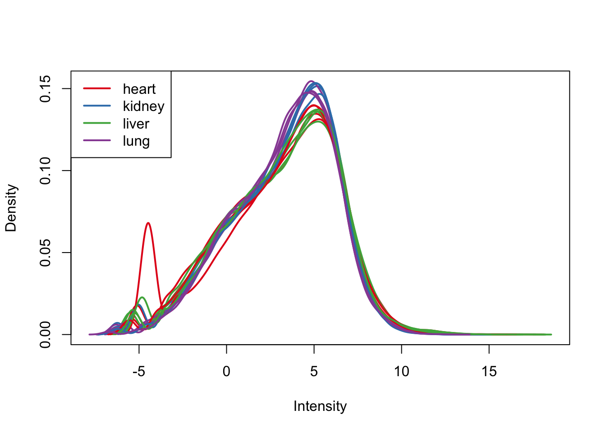
plotDensities(cpm.voom[,33:48], group=samples$Tissue, col=pal[as.numeric(samples$Tissue)])
col = as.data.frame(pal[as.numeric(samples$Species)])
col_hearts = col[all_hearts,]
col_kidneys = col[all_kidneys, ]
col_livers = col[all_livers, ]
col_lungs = col[all_lungs, ]
group = as.data.frame(samples$Species)
group_hearts = group[all_hearts, ]
group_kidneys = group[all_kidneys, ]
group_livers = group[all_livers, ]
group_lungs = group[all_lungs, ]
# Density plots for each tissue
plotDensities(cpm.voom[,all_hearts], col=col_hearts, legend = FALSE)
legend('topright', legend = levels(group_hearts), col = levels(col_hearts), pch = 20)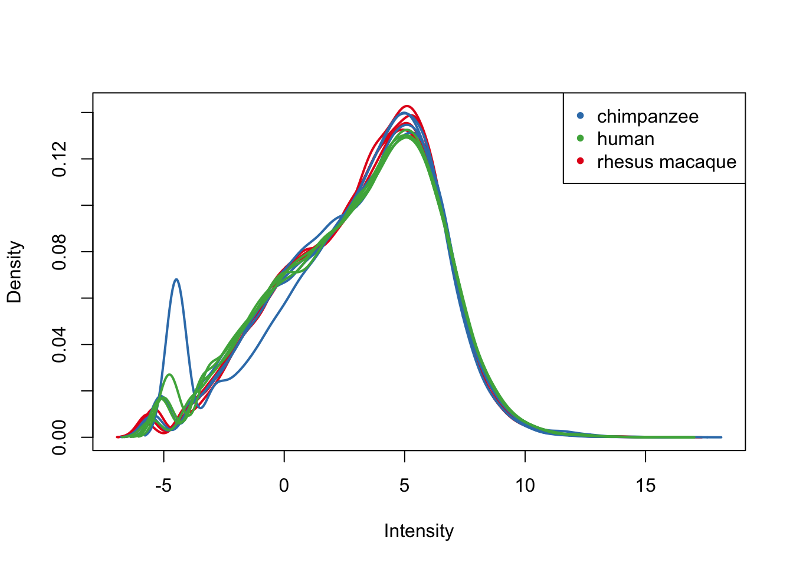
plotDensities(cpm.voom[,all_kidneys], col=col_kidneys, legend = FALSE)
legend('topright', legend = levels(group_kidneys), col = levels(col_kidneys), pch = 20)
plotDensities(cpm.voom[,all_livers], col=col_livers, legend = FALSE)
legend('topright', legend = levels(group_livers), col = levels(col_livers), pch = 20)plotDensities(cpm.voom[,all_lungs], col=col_lungs, legend = FALSE)
legend('topright', legend = levels(group_lungs), col = levels(col_lungs), pch = 20)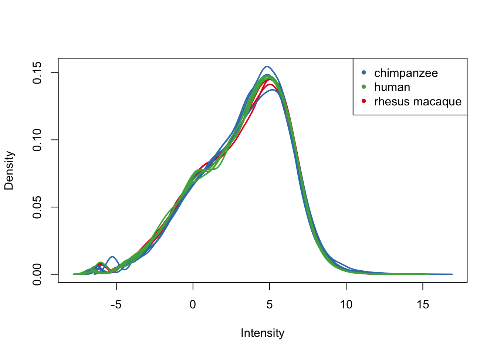
PCA and clustering
# PCA
# Load colors
colors <- colorRampPalette(c(brewer.pal(9, "Blues")[1],brewer.pal(9, "Blues")[9]))(100)
pal <- c(brewer.pal(9, "Set1"), brewer.pal(8, "Set2"), brewer.pal(12, "Set3"))
# Check that there's no "NAs" in the data
select <- counts_genes
summary(apply(select, 1, var) == 0) ## Mode FALSE TRUE NA's
## logical 28253 1777 0 # Perform PCA
pca_genes <- prcomp(t(cpm.voom$E), scale = F)
scores <- pca_genes$x
#Make PCA plots with the factors colored by tissue
### PCs 1-5 Raw Data
for (n in 1:5){
col.v <- pal[as.integer(samples$Tissue)]
plot_scores(pca_genes, scores, n, n+1, col.v)
}# Clustering (original code from Julien Roux)
cors <- cor(cpm.voom$E, method="spearman", use="pairwise.complete.obs")
heatmap.2( cors, scale="none", col = colors, margins = c(12, 12), trace='none', denscol="white", labCol=labels, ColSideColors=pal[as.integer(as.factor(samples$Species))], RowSideColors=pal[as.integer(as.factor(samples$Tissue))+9], cexCol = 0.2 + 1/log10(15), cexRow = 0.2 + 1/log10(15))
fit.GC.norm <- lmFit(rpkm.GC.norm.voom, design, block=samples\(Individual, #correlation=corfit.GC.norm\)consensus)
fit.GC.norm <- eBayes(fit.GC.norm)
Voom and corfit (filtering and cyclic loess normalization)
# Voom with individual as a random variable
cpm.voom.cyclic <- voom(dge_2_in_4, design, normalize.method="cyclicloess", plot=T)corfit <- duplicateCorrelation(cpm.voom.cyclic, design, block=samples$Individual)
corfit$consensus## [1] 0.1827305#save(corfit, file="corfit.genes.cyclic.RDa")
# Final voom on filtered data
cpm.voom.cyclic <- voom(dge_2_in_4, design, normalize.method="cyclicloess", plot=TRUE, block=samples$Individual, correlation=corfit$consensus)#save(cpm.voom, file="voom.genes.RDa")
boxplot(cpm.voom.cyclic$E, col = t(col))plotDensities(cpm.voom.cyclic, group=samples$Tissue, col=pal[as.numeric(samples$Tissue)])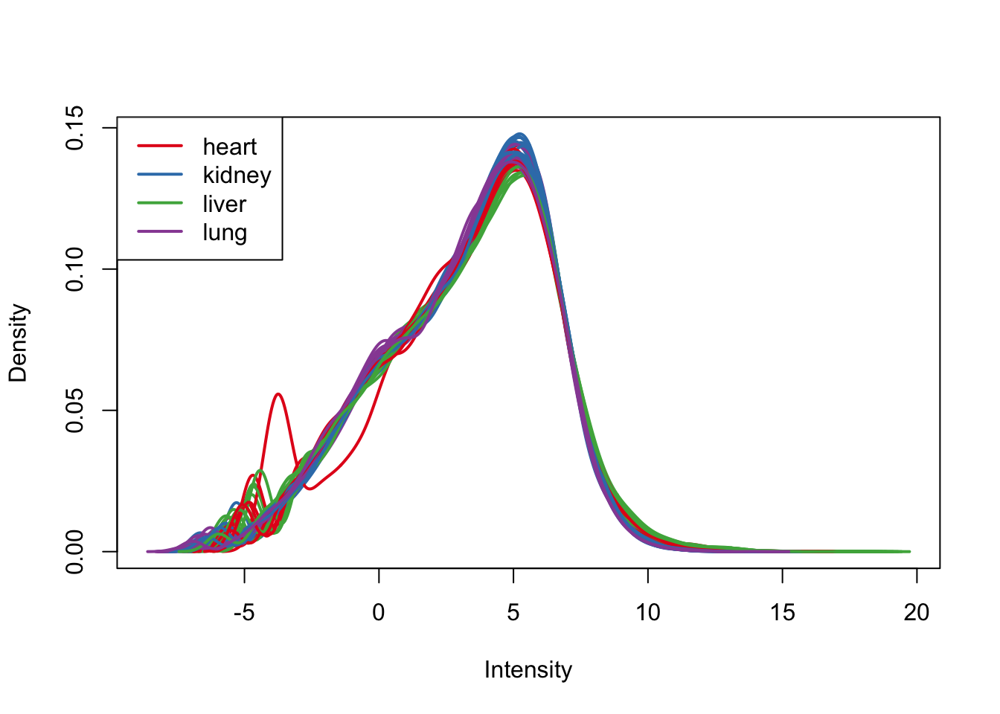
col = as.data.frame(pal[as.numeric(samples$Species)])
group = as.data.frame(samples$Species)
# Density plots for each species
plotDensities(cpm.voom.cyclic[,1:16], group=samples$Tissue, col=pal[as.numeric(samples$Tissue)])plotDensities(cpm.voom.cyclic[,17:32], group=samples$Tissue, col=pal[as.numeric(samples$Tissue)])plotDensities(cpm.voom.cyclic[,33:48], group=samples$Tissue, col=pal[as.numeric(samples$Tissue)])# Density plots for each tissue
plotDensities(cpm.voom.cyclic[,all_hearts], col=col_hearts, legend = FALSE)
legend('topright', legend = levels(group_hearts), col = levels(col_hearts), pch = 20)
plotDensities(cpm.voom.cyclic[,all_kidneys], col=col_kidneys, legend = FALSE)
legend('topright', legend = levels(group_kidneys), col = levels(col_kidneys), pch = 20)plotDensities(cpm.voom.cyclic[,all_livers], col=col_livers, legend = FALSE)
legend('topright', legend = levels(group_livers), col = levels(col_livers), pch = 20)plotDensities(cpm.voom.cyclic[,all_lungs], col=col_lungs, legend = FALSE)
legend('topright', legend = levels(group_lungs), col = levels(col_lungs), pch = 20)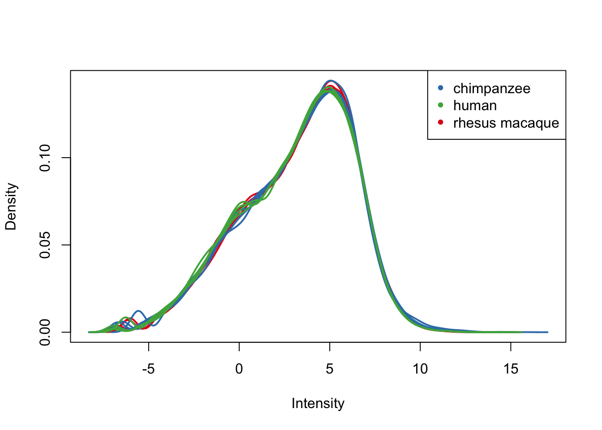
PCA and clustering
# PCA
pca_genes <- prcomp(t(cpm.voom.cyclic$E), scale = F)
scores <- pca_genes$x
#Make PCA plots with the factors colored by tissue
### PCs 1-10 Raw Data
for (n in 1:5){
col.v <- pal[as.integer(samples$Tissue)]
plot_scores(pca_genes, scores, n, n+1, col.v)
}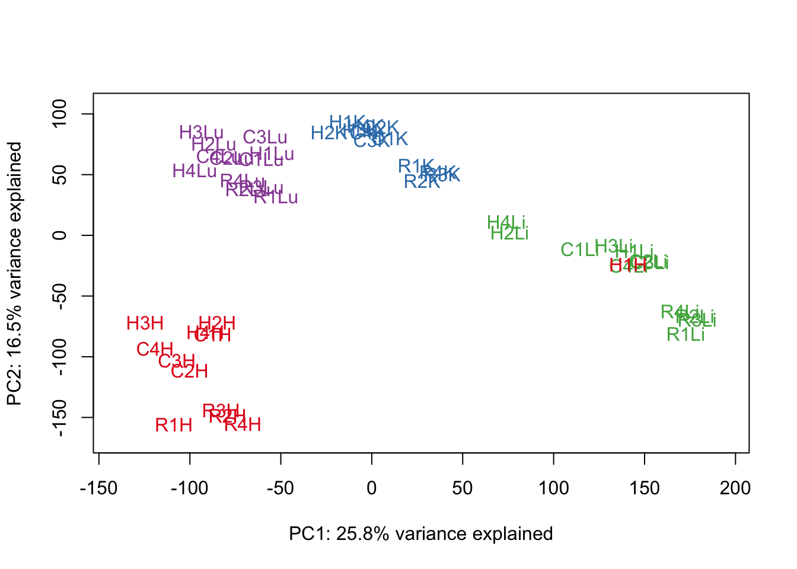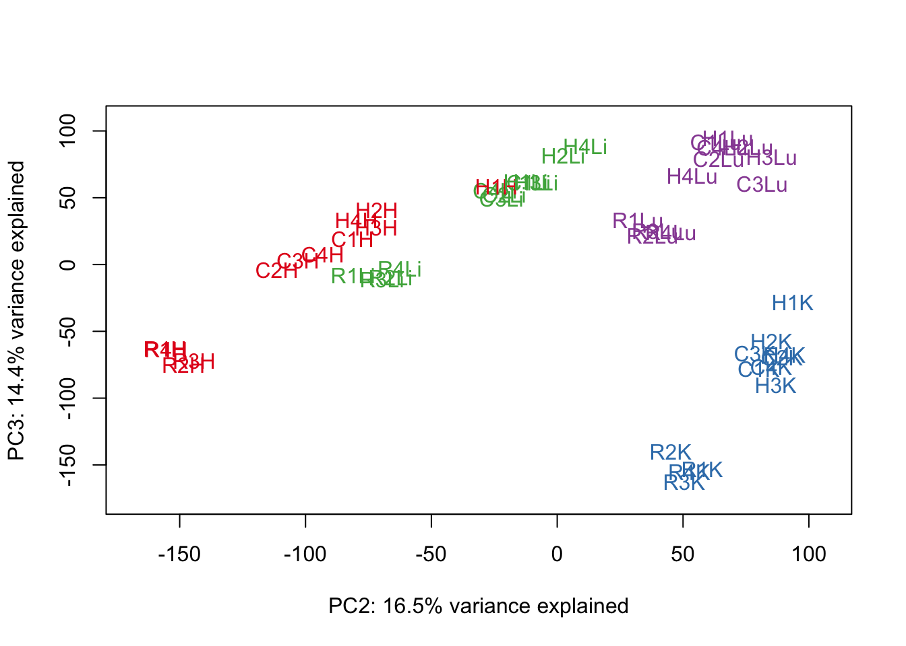
# Clustering (original code from Julien Roux)
cors <- cor(cpm.voom.cyclic$E, method="spearman", use="pairwise.complete.obs")
heatmap.2( cors, scale="none", col = colors, margins = c(12, 12), trace='none', denscol="white", labCol=labels, ColSideColors=pal[as.integer(as.factor(samples$Species))], RowSideColors=pal[as.integer(as.factor(samples$Tissue))+9], cexCol = 0.2 + 1/log10(15), cexRow = 0.2 + 1/log10(15))
Voom and corfit (filtering and quantile normalization)
# Voom with individual as a random variable
cpm.voom.quantile <- voom(dge_2_in_4, design, normalize.method="quantile", plot=T)
corfit <- duplicateCorrelation(cpm.voom.quantile, design, block=samples$Individual)
corfit$consensus## [1] 0.1847586#save(corfit, file="corfit.genes.cyclic.RDa")
# Final voom on filtered data
cpm.voom.quantile <- voom(dge_2_in_4, design, normalize.method="quantile", plot=TRUE, block=samples$Individual, correlation=corfit$consensus)#save(cpm.voom, file="voom.genes.RDa")
boxplot(cpm.voom.quantile$E, col = t(col))plotDensities(cpm.voom.quantile, group=samples$Tissue, col=pal[as.numeric(samples$Tissue)])col = as.data.frame(pal[as.numeric(samples$Species)])
group = as.data.frame(samples$Species)
# Density plots for each species
plotDensities(cpm.voom.quantile[,1:16], group=samples$Tissue, col=pal[as.numeric(samples$Tissue)])plotDensities(cpm.voom.quantile[,17:32], group=samples$Tissue, col=pal[as.numeric(samples$Tissue)])plotDensities(cpm.voom.quantile[,33:48], group=samples$Tissue, col=pal[as.numeric(samples$Tissue)])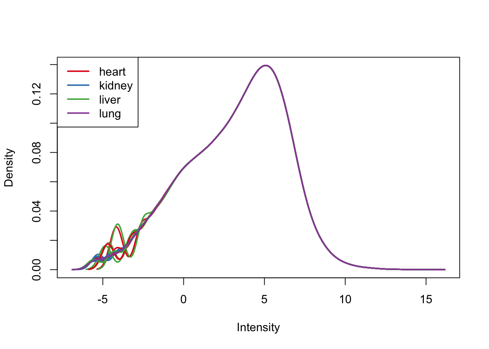
# Density plots for each tissue
plotDensities(cpm.voom.quantile[,all_hearts], col=col_hearts, legend = FALSE)
legend('topright', legend = levels(group_hearts), col = levels(col_hearts), pch = 20)plotDensities(cpm.voom.quantile[,all_kidneys], col=col_kidneys, legend = FALSE)
legend('topright', legend = levels(group_kidneys), col = levels(col_kidneys), pch = 20)plotDensities(cpm.voom.quantile[,all_livers], col=col_livers, legend = FALSE)
legend('topright', legend = levels(group_livers), col = levels(col_livers), pch = 20)
plotDensities(cpm.voom.quantile[,all_lungs], col=col_lungs, legend = FALSE)
legend('topright', legend = levels(group_lungs), col = levels(col_lungs), pch = 20)
PCA and clustering
# PCA
pca_genes <- prcomp(t(cpm.voom.quantile$E), scale = F)
scores <- pca_genes$x
#Make PCA plots with the factors colored by tissue
### PCs 1-5 Raw Data
for (n in 1:5){
col.v <- pal[as.integer(samples$Tissue)]
plot_scores(pca_genes, scores, n, n+1, col.v)
}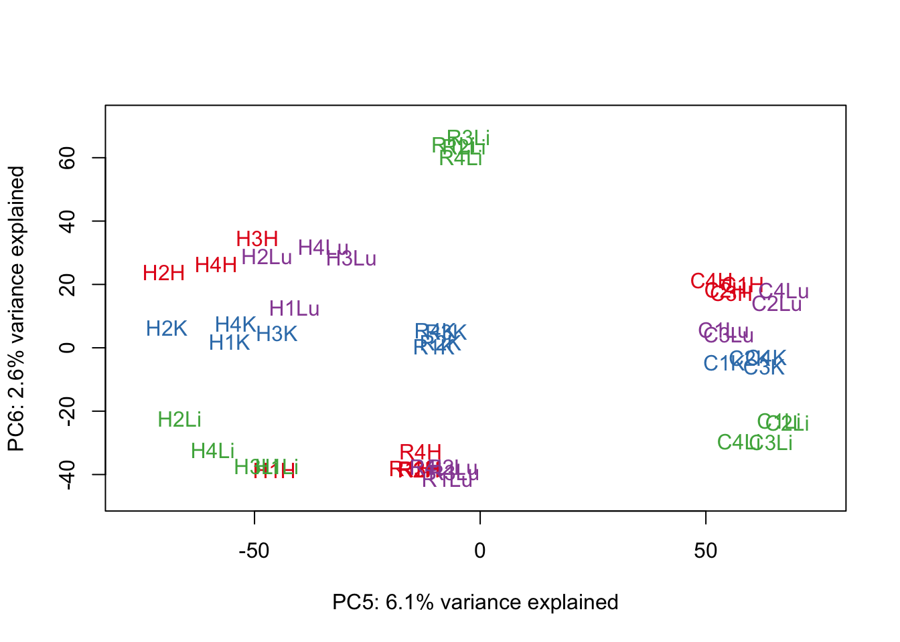
# Clustering (original code from Julien Roux)
cors <- cor(cpm.voom.quantile$E, method="spearman", use="pairwise.complete.obs")
heatmap.2( cors, scale="none", col = colors, margins = c(12, 12), trace='none', denscol="white", labCol=labels, ColSideColors=pal[as.integer(as.factor(samples$Species))], RowSideColors=pal[as.integer(as.factor(samples$Tissue))+9], cexCol = 0.2 + 1/log10(15), cexRow = 0.2 + 1/log10(15))GC content normalization + filtering + TMM + voom + no normalization
There could be different GC